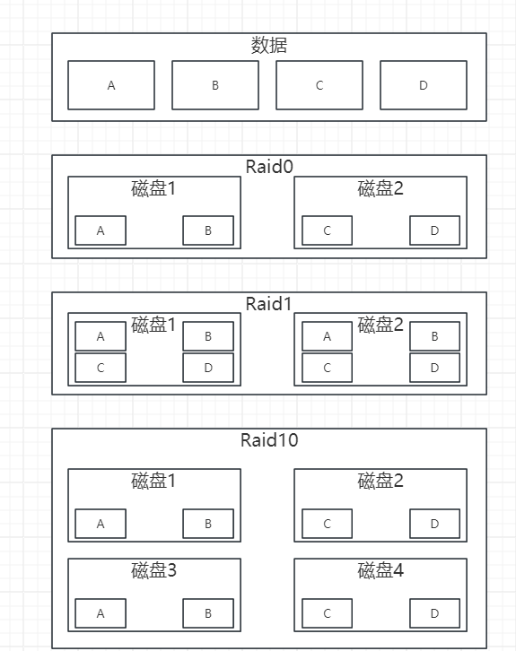

RAID
[toc]
简介
RAID（Redundant Array of Independent Disks，冗余独立磁盘阵列）是一种将多个物理硬盘组合成一个逻辑单元的技术，其主要目的是提高数据存储的性能、可靠性和容量。通过不同的RAID级别配置，可以实现以下几个关键优势：
- 性能提升：RAID通过并行处理数据的读写操作，从而提高整体的访问速度。例如，RAID 0（条带化）将数据分散存储在多个磁盘上，可以显著提高读取和写入速度。
- 数据冗余和容错能力：通过数据镜像（如RAID 1）或校验机制（如RAID 5、RAID 6），RAID可以在一个或多个硬盘出现故障时保护数据不丢失，从而增强数据的安全性。例如，RAID 1通过将数据完全复制到另一块磁盘上，确保即使其中一块磁盘失效，数据也不会丢失。
- 容量扩展：RAID可以将多个硬盘的存储容量结合起来，提供更大的存储空间。例如，RAID 5通过条带化和奇偶校验的组合，不仅提供了容错能力，还最大化利用了硬盘的存储容量。
不同RAID级别的特点如下：
- RAID 0：将数据条带化分布在多个磁盘上，没有冗余，提供最高的性能，但没有容错能力。
- RAID 1：将数据镜像存储在两块或更多磁盘上，提供高数据冗余和读性能，但写性能和存储利用率较低。
- RAID 5：将数据和奇偶校验信息条带化存储在三个或更多磁盘上，提供良好的读性能、数据冗余和存储利用率，但写性能略低于RAID 0。
- RAID 6：类似RAID 5，但使用双重奇偶校验，可以在两块磁盘同时失效的情况下保护数据，提高了容错能力。
- RAID 10（RAID 1+0）：结合RAID 0和RAID 1的特点，既有高性能的条带化，又有高冗余的镜像，适用于需要高性能和高可靠性的场景。
0是分开，1是备份，10是既分开又备份。

RAID 3
- 条带化和专用奇偶校验盘：RAID 3 将数据以字节级或位级条带化，并在一个专用的奇偶校验盘上存储奇偶校验信息。
- 高数据传输率：因为所有磁盘同时工作，RAID 3 提供了很高的连续数据传输速率，适合大文件的读取和写入。
- 容错能力：如果一块数据盘出现故障，可以通过奇偶校验盘的数据恢复丢失的数据。
- 缺点：奇偶校验盘成为瓶颈，写入性能较低，因为每次写入操作都需要更新奇偶校验盘。
RAID 5
- 条带化和分布式奇偶校验：RAID 5 将数据和奇偶校验信息条带化存储在三个或更多磁盘上，奇偶校验信息分布在所有磁盘上，而不是专用一个盘。
- 良好的读性能：由于数据分布在多个磁盘上，可以并行读取，读性能接近 RAID 0。
- 良好的存储利用率：存储空间的利用率为 ( \frac{(n-1)}{n} ) （n 为磁盘数量），比 RAID 1 高。
- 容错能力：允许一块磁盘故障，故障磁盘的数据可以通过奇偶校验信息恢复。
- 写性能稍低：写入时需要计算和写入奇偶校验信息，写性能比读性能低，但比 RAID 3 高。
RAID 6
- 条带化和双重奇偶校验：RAID 6 类似于 RAID 5，但增加了第二层奇偶校验信息，分布在所有磁盘上。
- 更高的容错能力：允许两块磁盘同时失效，这使得 RAID 6 比 RAID 5 更可靠。
- 良好的读性能：与 RAID 5 类似，由于数据分布在多个磁盘上，可以并行读取。
- 存储利用率较 RAID 5 低：存储空间的利用率为 ( \frac{(n-2)}{n} ) （n 为磁盘数量），因为两块磁盘用于存储奇偶校验信息。
- 写性能进一步降低：写入时需要计算和写入双重奇偶校验信息，写性能比 RAID 5 稍低。
总结
- RAID 3 提供高连续数据传输速率，适合大文件操作，但奇偶校验盘是瓶颈。
- RAID 5 提供良好的读性能和存储利用率，适合大多数应用场景，有一定的写入性能损失。
- RAID 6 提供更高的容错能力，适合需要高数据可靠性的场景，但有更高的写入性能损失和较低的存储利用率。